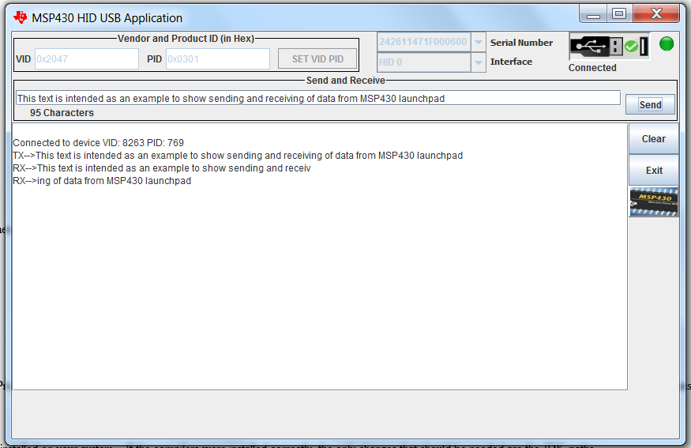

MSP430 Energia USB HID -- Release Notes
Welcome to the USB HID example for Energia. The example
is designed to use the
USB HID-Datapipe format (see the MSP430 USB
Developer's Programmer's Guide for more information) to send and
receive data to and from the host while running Energia on the MSP430
Launch Pad.
The project is composed of
Energia framework with USB HID example and the HidDemo tool that
supports communication between the host and MSP430 Launchpad.
The HidDemo tool is available
in MSP430 USB Developers Package.
This document is divided into the following sections:
Bring up Energia and click on File
-> Examples -> USBHID
-> USBHidExample_Echo_To_Host. When the sketch appears in the
workspace, click on Tools -> Board ->Launchpad w/ MSP430F5529 and
then click on the button with the right arrow to compile and
download the sketch to the LaunchPad. Power cycle the Launchpad
by disconnecting and re-connecting the USB connection.
Bring up the HID Demo tool and type text into the 'Send and Receive' text box.
The Hid
Demo App can be executed from a command line, by navigating to the
directory in
which this *.jar file is located, and type "java
-jar HidDemo.jar". The
HID
Demo App can can also be started by double-clicking on hidDemo-java.jar. Double clicking assumes that
your
system, Java version, and path are configured correctly so it is
recommended to try command line execution first.

The MSP430 USB Developers Package contains examples that show various
implementation of USB HID interface. The Energia USBHID example
sketch and the USBHumanInterface.cpp file can be updated to implement
the HID functionalities as represented in the examples. The
intent of the USBHumanInterface.cpp file was to provide functions
that allowed for wrapping and manipulating the USB stack API calls and
to provide the user with flexibility to add additional user created
APIs.
This release of the USBHID example has been tested on Windows 7 64-bit machine.
None.
This is demo code, and therefore there is no versioning.
First check the
Examples Guide and MSP430 USB API Programmer's Guide in the USB
Developers Package for more information on MSP430 HID interface. If you still need support,
please
visit the MSP430
E2E forum.
or e-mail us directly at msp430ware@list.ti.com.